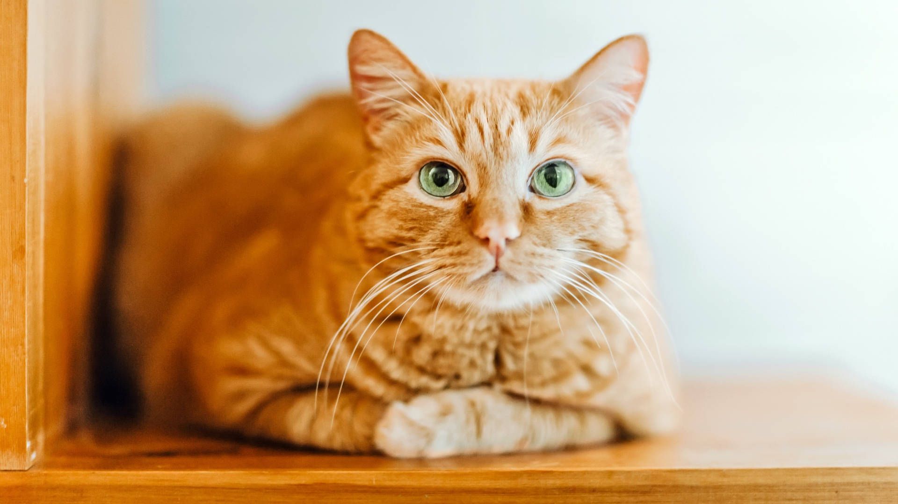
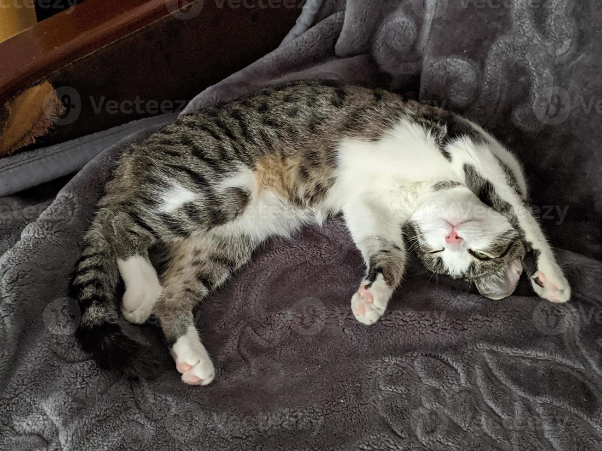

Características | Cuidados | Curiosidades
Los gatos son animales domésticos conocidos por su inteligencia, curiosidad y capacidad para adaptarse a diferentes ambientes. Son mamíferos pertenecientes a la familia de los felinos y han acompañado a los seres humanos durante miles de años.
Una de sus características más interesantes es su independencia. Aunque pueden pasar bastante tiempo solos, también disfrutan de la compañía de las personas. Los gatos necesitan atención, alimento adecuado, agua fresca y un lugar seguro para descansar.
Dato curioso: los gatos pueden dormir muchas horas durante el día. Además, poseen un excelente sentido del oído y pueden mover sus orejas para localizar sonidos.
El nombre científico del gato doméstico es Felis catus. Es un animal muy curioso y observador, por lo que normalmente explora los lugares nuevos de su entorno.
A continuación se pueden observar dos imágenes relacionadas con el tema de esta página.


Cuidar correctamente a un gato implica proporcionarle alimentación de calidad, agua limpia, higiene y atención veterinaria. También es importante que tenga un espacio tranquilo donde pueda dormir y sentirse seguro.
Los gatos tienen una gran capacidad para saltar y mantener el equilibrio. Sus bigotes también cumplen una función importante, ya que les ayudan a percibir su entorno y determinar si pueden pasar por determinados espacios.
Si quieres aprender más sobre los gatos, puedes visitar la página de Wikipedia sobre el gato doméstico .